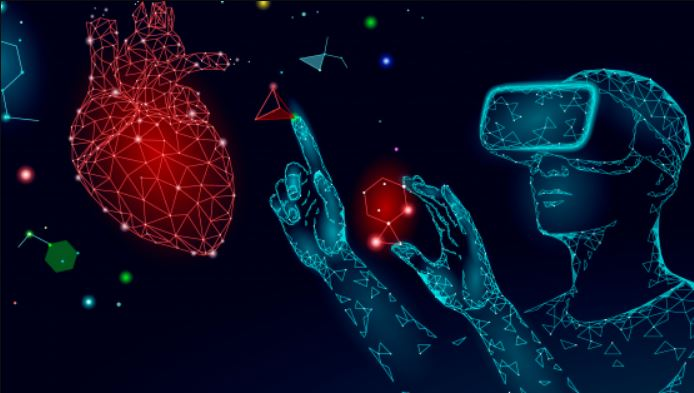
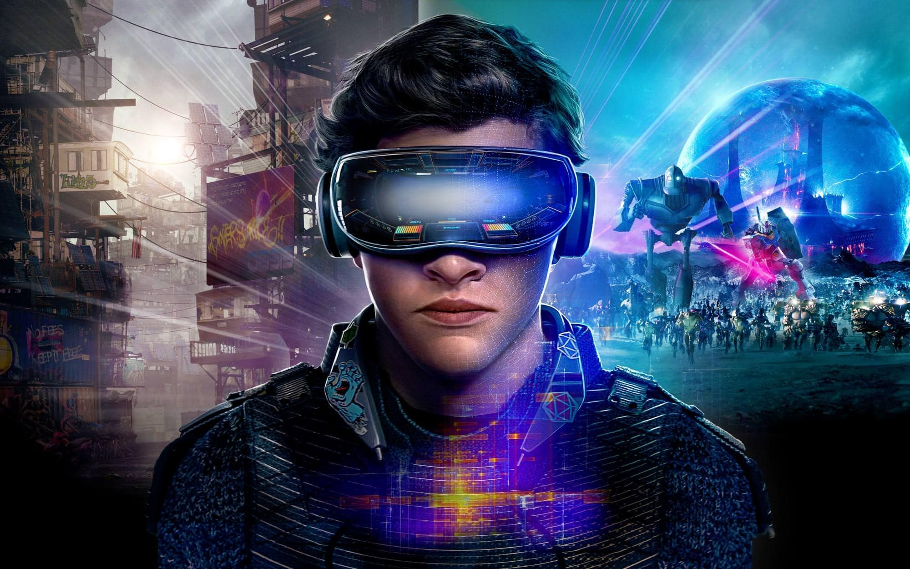
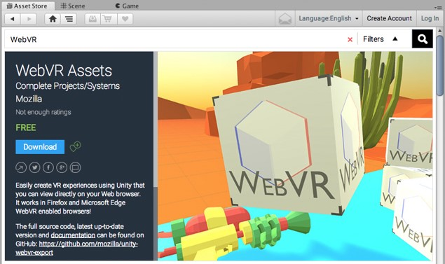

Virtual Reality (VR)
Virtual reality (VR) is a simulated experience of a three-dimensional image or environment, which is created using an electronic device. It is all about creating the best experience for users.
For phones:
• Enable VR by providing pose information and allowing the WebGL scene to be rendered side by side to be placed in a headset like the Cardboard.
• Enable AR by using the platforms AR capabilities such as ARCore to render the WebGL scene onto the user’s environment like a magic window.
For Desktops:
• Desktop computers can make use of tethered VR hardware such as the Oculus Rift or HTC Vive to display the VR scene.
For standalone AR Headsets:
• Enable AR by using the platforms AR capabilities to render the WebGL scene immersivity onto the user’s environment.
For standalone VR Headsets:
• Enable VR by rendering the scene using the platforms VR capabilities.
How does VR work?
The subject of how virtual reality works is when you are simulating the vision.
The headset is designed to perfectly create an immersive 3D environment. Each VR headset puts up a screen (or two – one for each eye) in front of eyes thus, eliminating any interaction with the real world. Two autofocus lenses are generally placed between the screen and the eyes that adjust based on individual eye movement and positioning. The visuals on the screen are rendered either by using a mobile phone or HDMI cable connected to a PC.
What do people use Virtual Reality for?
People use Virtual Reality for:
• Healthcare/Surgery
• Architecture
• Entertainment
• Business
• Sport
• Military
• Education
Applications of VR in web development.
• Virtual Reality is used in websites to help users visualize the products they are going to purchase.
• VR devices like Oculus Rift or Google Cardboard are expected to revolutionize industries like tourism, architecture, and retail.
Early Adopters: Volvo, McDonalds.
How does Virtual Reality impact Website Development?
Virtual Reality impacts Website Development when it:
• Is integrating with Browsers (WebXR): allows you to experience virtual reality in your browser.
• Is being developed for Apps: Developers create web apps for businesses allowing potential customers to have a virtual experience with a business’s product or service.
• Is used for variety of circumstances: challenges and expands the job of web designers/developers with all the unique nuances that make up Virtual Reality.

What is Web-Based Virtual Reality?
A Web-Based Virtual Reality (WebVR: Depricated/WebXR: Currently Active) is:
• An emerged platform-independent framework that permits individuals to create immersive and interactive VR applications.
• It is an open specification that makes it possible to experience VR in your browser.
The goal is to make it easier for everyone to get into VR experiences, no matter what device you have.
WebXR Device API
What is WebXR?
WebXR is a group of standards which are used together to support rendering 3D scenes to hardware designed for presenting virtual worlds (virtual reality, or VR), or for adding graphical imagery to the real world, (augmented reality, or AR). The WebXR Device API implements the core of the WebXR feature set, managing the selection of output devices, render the 3D scene to the chosen device at the appropriate frame rate, and manage motion vectors created using input controllers.
WebXR-compatible devices include fully immersive 3D headsets with motion and orientation tracking, eyeglasses which overlay graphics atop the real-world scene passing through the frames, and handheld mobile phones which augment reality by capturing the world with a camera and augment that scene with computer-generated imagery.
To accomplish these things, the WebXR Device API provides the following key capabilities:
• Find compatible VR or AR output devices.
• Render a 3D scene to the device at an appropriate frame rate.
• (Optionally) mirror the output to a 2D display.
• Create vectors representing the movements of input controls.
Abstract: This specification describes support for accessing virtual reality (VR) and augmented reality (AR) devices, including sensors and head-mounted displays, on the Web.
Concepts & Usage
While the older WebVR API was designed solely to support Virtual Reality (VR), WebXR provides support for both VR and Augmented Reality (AR) on the web. Support for AR functionality is added by the WebXR Augmented Reality Module.
A typical XR device can have either 3 or 6 degrees of freedom and might or might not have an external positional sensor.
The equipment may also include an accelerometer, barometer, or other sensors which are used to sense when the user moves through space, rotates their head, or the like.
Getting Started Building a Website
People use Virtual Reality for:
• A-Frame: A-Frame is a web framework for building 3D/AR/VR experiences using a combination of HTML and JavaScript. It is based on three.js and has a large community, as well as lots of community-made custom elements and components.
• Babylon: Babylon.js is an easy-to-use real-time 3D game engine built using TypeScript. It has full WebXR support out of the box, including gaze and teleportation support, AR experimental features and more. To simplify WebXR development Babylon.js offers the WebXR Experience Helper, which is the one-stop-shop for all XR-related functionalities.
• Model-viewer: Model viewer is a custom HTML element for displaying 3D models and viewing them in AR.
• Play-Canvas: Play-Canvas is an open-source game engine. It uses HTML5 and WebGL to run games and other interactive 3D content in any mobile or desktop browser.
• React-XR: React-XR is a collection of hooks to help you build XR experiences in react-three-fiber applications.
How to add Virtual Reality to a Website?
• Step 1: find the video to embed.
• Step 2: copy the html code.
• Step 3: edit your webpage text.
• Step 4: paste your html link.
• Step 5: visualize the embedded video.
What will the future of Virtual Reality be like in Web?
Virtual Reality is one of the technologies with the highest projected potential for growth.
According to the latest forecasts from IDC (International Data Corporation) Research, investment in VR and AR will multiply 21-fold over the next four years, reaching 15.5 billion euros by 2022. Both technologies will be key to companies' digital transformation plans and their spending in this area will exceed that of the consumer sector by 2019. Therefore, it is expected that by 2020 over half of the larger European companies would have VR & AR strategy.
The big technology companies are already working to develop headsets that do not need cables and that allow images to be seen in HD. They are developing Virtual Reality headsets in 8K and with much more powerful processors.
There is even talk that in the next few years they could integrate Artificial Intelligence. The latest 5G standard can also provide very interesting scenarios for the evolution of VR. This standard will allow more devices and large user communities to be connected.
All this means that Virtual Reality is no longer science fiction. It is integrated into our present and, in the coming years, it will lead to advances that will shape the future.